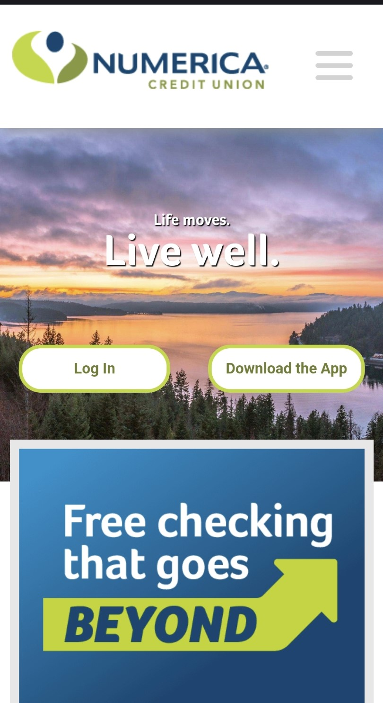
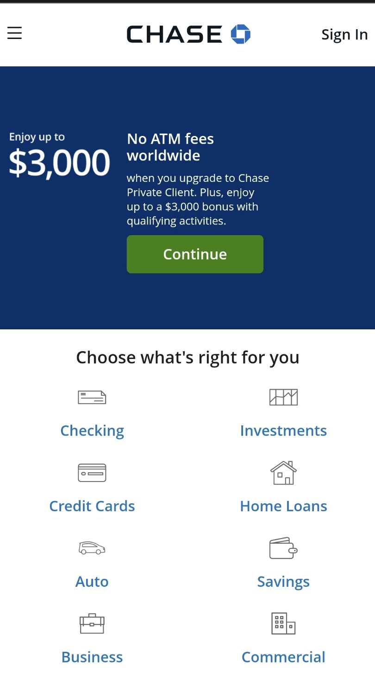

Rule of Thirds
Numerica Credit Union
www.numericacu.com

The homepage of Numerica Credit Union's website shows the "rule of thirds" in imagery and layout. The most important piece is in the upper left corner with the next most important in the lower left and upper right. Scrollable content is below the inital landing screen.
Hick's Law
Idaho Central Credit Union
www.iccu.org
The simplicity of the Idaho Central Credit Union homepage helps you quickly make a desicion on whether to click on a button or scroll down for more info. This is exactly what Hick's Law is all about when it comes to web and user expeience design.
Contrast
Chase
www.chase.com

The Chase Bank landing page uses nice contrast design. The dark text on white background and the white text on dark background helps users read and see the content easily. The white vs dark background colors also help separate content sections of the page, making it easier to make a desicion on where to go.